Infertility is the most costly reproductive problem on a dairy farm. Every extra month a cow stays empty costs feed without milk or a calf — and the longer the delay, the harder it is to fix. The good news is that most infertility has a findable cause: poor nutrition, missed heat, uterine infection, ovarian cysts, or wrong insemination timing.
This guide explains the main reproductive disorders of cattle — anestrus, repeat breeding, ovarian cysts, endometritis and metritis, and retained fetal membranes — and shows how a veterinarian diagnoses infertility step by step and chooses treatment.
Anestrus — When the Cow Does Not Show Heat
Anestrus means a cow is not showing heat. In true anestrus the ovaries are inactive and no cycle is running. In silent heat the cow is cycling but the signs are weak and the farmer misses them — the two look the same from outside, and only a veterinary examination tells them apart.
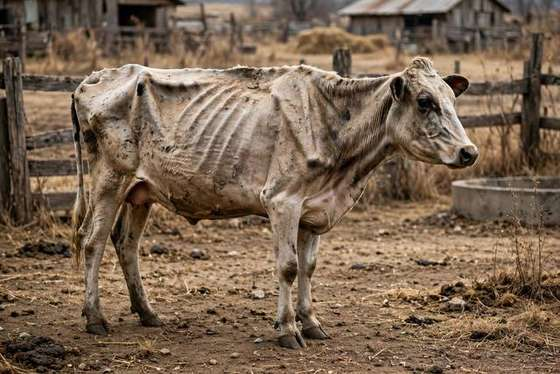
Poor nutrition is the commonest cause of anestrus — a thin cow will not cycle
1
Poor nutrition and low body condition(The commonest cause — a cow in negative energy balance after calving stops cycling until feeding improves)
2
Heavy suckling(A calf nursing frequently suppresses the cow's cycles, especially in beef and smallholder herds)
3
Recent calving(Most cows need 40 to 60 days after calving before normal cycles return)
4
Season and heat stress(Hot weather shortens and weakens heat signs, particularly in buffaloes and high-yielding cows)
5
Disease and ovarian problems(Uterine infection, ovarian cysts, and chronic disease can all stop cycling)
Treatment principles: correct feeding and minerals first, manage suckling, and let the veterinarian examine the ovaries. Hormonal treatment helps only after the underlying cause is addressed — hormones cannot make a starving cow fertile.
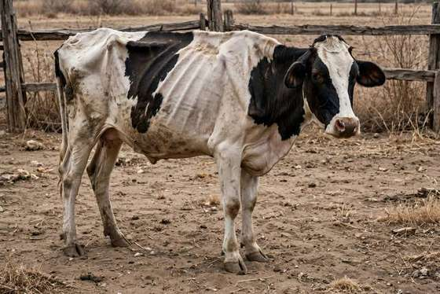
A thin, underfed cow will not cycle — feed first, then treat
Repeat Breeding — Three Services Without Conception
A repeat breeder is a cow that has been inseminated three or more times without conceiving, although she cycles normally and shows no obvious disease. Repeat breeding is a symptom with many causes, not a single disease — so diagnosis comes before treatment.
1
Wrong insemination timing(Inseminating too early or too late in heat — the commonest cause; review heat detection and the AM-PM rule)
2
Poor semen handling(Semen damaged by bad thawing, warm storage, or an unskilled inseminator)
3
Early embryonic death(The cow conceives but loses the embryo in the first weeks — often from heat stress, infection or low progesterone)
4
Subclinical uterine infection(Mild endometritis with no fever or visible discharge still prevents conception)
5
Mineral and vitamin deficiency(Phosphorus, selenium, copper and vitamin A deficiency are linked with poor fertility)
6
Anatomical and genetic causes(Cervical or uterine defects, and chromosomal problems in a small number of cows)
Ovarian Cysts — Follicular and Luteal
An ovarian cyst is a fluid-filled structure larger than about 25 mm that stays on the ovary without ovulating. Cysts are common in high-yielding dairy cows in early lactation and are a leading cause of irregular heat and infertility.
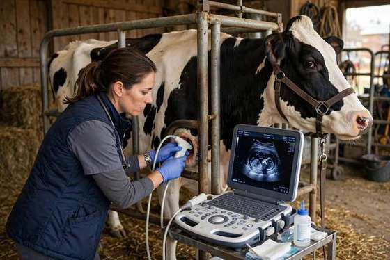
Ultrasound shows whether a cyst is follicular or luteal
1
Follicular cysts(Thin-walled, produce estrogen — the cow may show continuous, frequent or aggressive heat behaviour, and may develop a masculine appearance over time)
2
Luteal cysts(Thick-walled, produce progesterone — the cow usually stops showing heat altogether)
Diagnosis: rectal palpation finds a large smooth structure on the ovary; ultrasound confirms the type. Treatment principles: hormonal treatment as prescribed by a veterinarian — the choice of hormone depends on the cyst type, so diagnosis must come first. Never attempt to crush a cyst by hand; it can damage the ovary and cause bleeding.
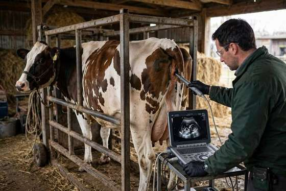
Ultrasound examination to check the ovary for cysts
Uterine Infections — Endometritis and Metritis
After calving the uterus is open to bacteria. Most cows clear the infection naturally, but some develop metritis or endometritis, which damage fertility for months if untreated.
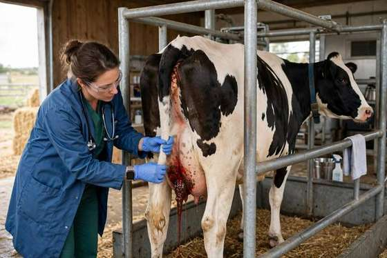
Abnormal discharge after calving is a warning sign of uterine infection
1
Metritis — whole uterine wall, early after calving(Usually in the first 10 days: fever, foul-smelling watery discharge, reduced appetite, depression and a drop in milk — a sick cow needing urgent veterinary treatment)
2
Endometritis — uterine lining only, later after calving(From about 3 weeks after calving: cloudy, pus-like or flecked discharge, often with no fever — the cow looks healthy but does not conceive)
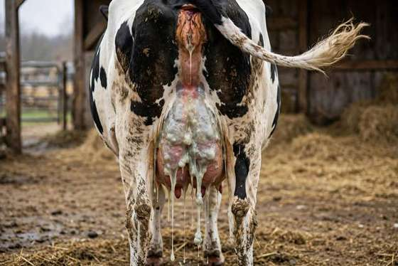
Cloudy, pus-like discharge — a sign of uterine infection
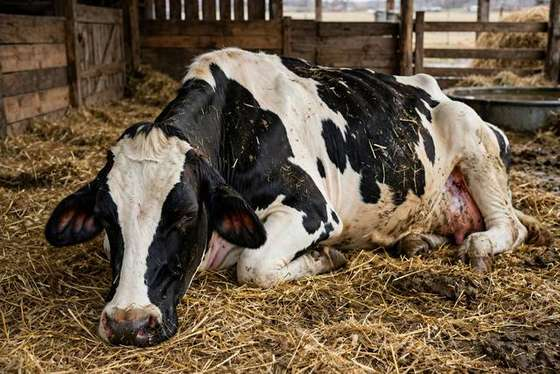
Metritis — a dull, sick cow with fever after calving
Diagnosis: calving history, temperature, vaginal examination and discharge scoring; ultrasound can show fluid in the uterus. Treatment principles: systemic antibiotics and anti-inflammatory medicines for metritis as prescribed by a veterinarian; prostaglandin-based treatment or uterine therapy for endometritis as prescribed. Clean calving areas and hygienic assistance prevent most cases. For full detail see our guide on Postpartum Metritis.
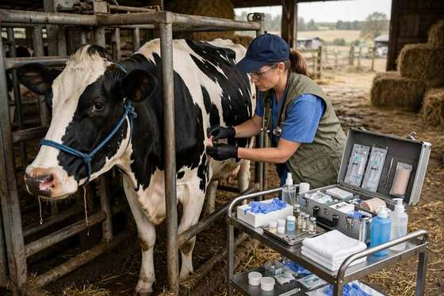
Uterine infection treatment — always under veterinary guidance
Retained Fetal Membranes — Brief Note
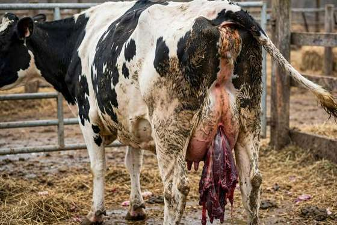
Retained placenta — never pull it by force, call the veterinarian
If the placenta (afterbirth) is not passed within 12 to 24 hours of calving, it is retained. Retained membranes are a major cause of metritis and delayed fertility. Never pull a retained placenta by force — it tears the uterus and causes severe infection. Treatment is veterinary: the veterinarian decides between careful manual removal, antibiotics and hormonal treatment as the case requires. See the full guide: Retained Fetal Membranes.
Diagnosing Infertility — Step by Step
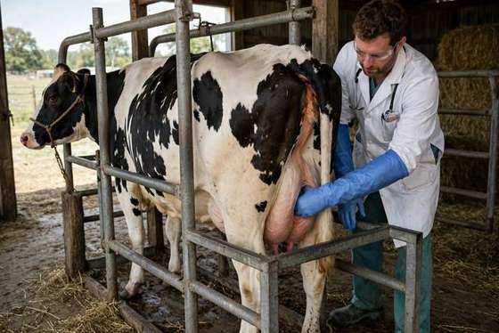
Reproductive examination — the starting point of every infertility work-up
1
History and breeding records(Calving date, heats seen, insemination dates and bulls used, milk yield, feeding and any illness — records often reveal the cause)
2
Body condition and general examination(Body condition score, teeth, feet, and signs of disease or mineral deficiency)
3
Reproductive examination(Rectal palpation of the uterus and ovaries to find pregnancy, cysts, infection or inactive ovaries)
4
Ultrasound(Confirms pregnancy, shows ovarian structures and fluid in the uterus)
5
Vaginal examination and discharge scoring(Checks the cervix and the character of any discharge)
6
Laboratory tests when needed(Blood or milk progesterone, mineral levels, or disease testing such as brucellosis, as the veterinarian advises)
7
Treatment plan and follow-up(Treatment matched to the diagnosis, with a recheck date — fertility cases always need follow-up)
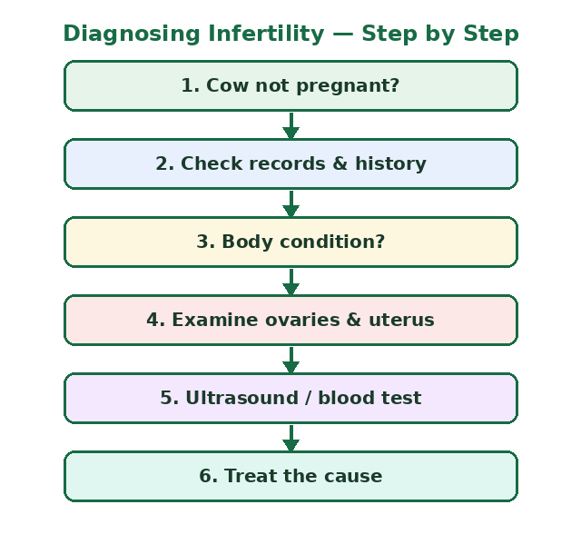
Diagnosing infertility — find the cause before treating
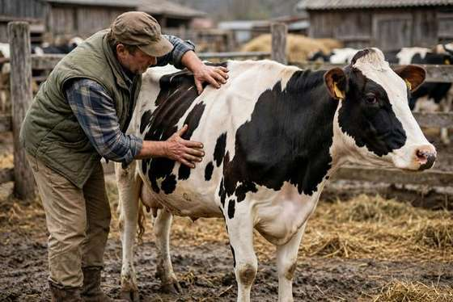
Body condition scoring — part of every fertility examination
Important: Never give hormones, antibiotics or uterine treatments without a diagnosis. The wrong treatment wastes money, delays conception and can harm the cow. All medicines should be used only as prescribed by a veterinarian.
⚠ Preventing infertility on your farm:
Feed cows well before and after calving — body condition at calving decides fertility.
Keep calving areas clean and assist births hygienically.
Watch heat twice daily and record every heat and insemination.
Supply minerals year-round and control parasites.
Call the veterinarian early — a cow empty 90 days after calving needs examination, not waiting.
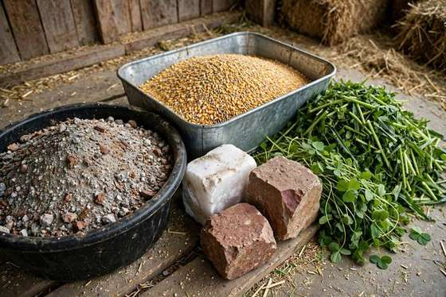
Good feeding and minerals — the first step in preventing infertility
Frequently Asked Questions
What is anestrus in cattle?
Anestrus means a cow is not showing heat. True anestrus is the absence of ovarian cycles, most often caused by poor nutrition and low body condition, heavy suckling, recent calving, season or disease. It is different from silent heat, where the cow cycles but the farmer misses the signs.
What is a repeat breeder cow?
A repeat breeder is a cow that has been inseminated three or more times without conceiving, although she cycles normally and shows no obvious disease. Common causes include wrong insemination timing, poor semen handling, early embryonic death, subclinical uterine infection, mineral deficiency and heat stress.
What are ovarian cysts in cows?
An ovarian cyst is a fluid-filled structure larger than 25 mm that persists on the ovary without ovulating. Follicular cysts produce estrogen and may cause continuous or irregular heat; luteal cysts produce progesterone and usually cause anestrus. Diagnosis is by rectal palpation and ultrasound, and treatment is hormonal, as prescribed by a veterinarian.
What is the difference between endometritis and metritis?
Metritis is infection of the whole uterine wall, usually in the first days after calving, with fever, foul-smelling discharge and a sick cow. Endometritis is infection of the uterine lining only, usually from 3 weeks after calving, with cloudy or pus-like discharge but often no fever. Both reduce fertility and need veterinary treatment.
How is infertility diagnosed in dairy cows?
Diagnosis starts with breeding records and history, then a reproductive examination by rectal palpation, often with ultrasound to check the ovaries, uterus and pregnancy status. Vaginal examination, discharge scoring, body condition scoring and sometimes blood or milk tests complete the picture before treatment is chosen.
Why is my cow not getting pregnant after 3 inseminations?
After three failed inseminations the cow is a repeat breeder and needs a veterinary examination. The commonest causes are wrong AI timing, poor heat detection, early embryonic loss, hidden uterine infection and mineral deficiency. Do not keep inseminating without a diagnosis — find the cause first.
My cow calved 3 months ago and shows no heat — what should I do?
First check feeding and body condition — a thin cow will not cycle. Reduce suckling if the calf is still nursing, and make sure minerals are supplied. Then call a veterinarian for a reproductive examination; the vet can check the ovaries by palpation or ultrasound and advise on feeding, weaning or hormonal treatment.
گائے کے بانجھ پن کی وجوہات اور علاج کیا ہیں؟
گائے کے بانجھ پن کی عام وجوہات میں ناقص خوراک، بچہ دانی کی سوزش، اووری کی سسٹ، ہیٹ کا نظر نہ آنا اور غلط وقت پر مصنوعی نسل کشی شامل ہیں۔ علاج وجہ کے مطابق ہوتا ہے — خوراک بہتر کرنا، بچہ دانی کا علاج، یا ہارمونل علاج۔ درست تشخیص کے لیے ویٹرنری ڈاکٹر سے معائنہ کروانا ضروری ہے۔
Key Takeaway
Most infertility has a findable, fixable cause — and the sooner it is found, the cheaper the fix. Feed the cow well, watch heat carefully, keep records, and call the veterinarian when a cow is empty 90 days after calving or fails three inseminations. Diagnosis first, treatment second, follow-up always. Follow current local veterinary authority guidance and medicine labels for all treatments.